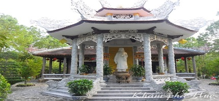

-

Đền Huyền Trân Công Chúa
Đền Huyền Trân từ lâu đã trở thành trung tâm văn hóa tâm linh, chốn thiền Phật giáo của văn hóa người dân xứ Huế. Tọa lạc tại 151 Thiên Thai, phường An Tây, thành phố Huế, đây là nơi thu hút đông đảo người dân địa phương cũng như du khách đến thăm quan bởi nét đẹp tĩnh lặng, mang phong thái bồng bềnh, đậm chất thiền, là sự u mặc của rừng thông bát ngát cùng với cái giản dị những kiêu hãnh của hoa cỏ nơi cửa Phật.
CHI TIẾT -
Chùa Thiên Mụ
Huế đẹp bởi cái trầm mặc, cổ kính từ những ngôi chùa nổi tiếng và không thể không nhắc đến chùa Thiên Mụ (Linh Mụ). Đây là ngôi chùa cổ xưa nằm trên đồi Tả Khê bên dòng sông Hương thơ mộng, thu hút du khách bởi vẻ đẹp tĩnh lặng của chốn thiền tâm, đồng thời cái đẹp của sông nước lẫn núi đồi. Đặt chân lên chùa Thiên Mụ, bạn bất chợt cảm giác bình yên lạ thường, ngắm nhìn sông Hương núi Ngự. Nơi đây nổi tiếng với nhiều câu chuyện truyền thuyết gắn với giai thoại lịch sử dân tộc.
CHI TIẾT -
Lăng Khải Định (Ứng Lăng)
Lăng Khải Định thuộc xã Thủy Bằng, huyện Hương Thủy, tỉnh Thừa Thiên Huế. Đây là nơi chôn cất vị vua thứ 12 triều nhà Nguyễn, Khải Định. Với kết cấu giao thoa giữa hai nền văn hóa Đông - Tây, Việt Nam cổ điển - hiện đại, tổng thể di tích lăng Khải Định thể hiện độ xa hoa, phô trương với nền kiến trúc độc đáo so với các công trình lăng tẩm khác.
CHI TIẾT -
Lăng Tự Đức (Khiêm Lăng)
Lăng Tự Đức là một trong những công trình kiến trúc đẹp nhất dưới triều Nguyễn, là nơi chôn cất vị vua thứ tư. Tự Đức, vị vua nổi tiếng về tài văn thơ, tâm hồn lãng mạn đậm chất thi sĩ. Quần thể lăng Tự Đức được xây dựng trong một thung lũng hẹp thuộc làng Dương Xuân Thượng, nay là địa phận thôn Thượng Ba, xã Thủy Xuân, thành phố Huế. Với khoảng 50 công trình trong lăng, lăng Tự Đức được xem như một công viên rộng lớn độc đáo, có sự hài hòa giữa thiên nhiên khí trời, lại mang đậm kiến trúc cung đình vua chúa, đây là địa điểm tu hút khách tham quan mỗi dịp đến với Huế. Giá vé cho một lượt tham quan là 100.000đ/khách.
CHI TIẾT -
Đại Nội Huế
Đại Nội Huế là một trong những quần thể di tích Cố Đô được UNESCO công nhận là Di sản văn hóa thế giới (12/11/1993), bao gồm Hoàng Thành và Tử Cấm Thành, thuộc địa phận phường Thuận Thành, thành phố Huế.
CHI TIẾT
Đây là trung tâm hành chính, chính trị của 13 đời vua và hoàng tộc, được khởi công xây dựng khoảng hơn hai thế kỉ trước. Với kiến trúc nghệ thuật cung đình đặc sắc, bên trong Đại Nội có hơn 100 công trình ở vị trí và chức năng khác nhau, Đại Nội là địa điểm du lịch thu hút lượng lớn du khách tham quan hàng năm khi đến Huế. Giá vé quy định cho một lượt tham quan là 150.000đ/khách, du khách sẻ có cái nhìn sâu sắc, hiểu rõ hơn tiến trình lịch sử dân tộc dưới triều Nguyễn. -
CUNG AN ĐỊNH
Cung An Định được xây dựng vào năm 1917, là công trình kiến trúc nghệ thuật độc đáo của triều Nguyễn, mang phong cách châu Âu kết hợp trang trí truyền thống cung đình. Dưới triều Hoàng đế Khải Định (1916-1925) và Bảo Đại (1926-1945), cung An Định là nơi tổ chức các lễ tiếp tân, lễ khánh hỷ của hoàng gia với sự tham dự của đình thần và các quan chức thuộc chính phủ Bảo hộ Pháp. Đây là nơi ghi dấu một giai đoạn gia đình cựu hoàng Bảo Đại sinh sống sau khi nhà vua thoái vị (8/1945); đặc biệt, cũng là nơi gắn bó nhiều kỷ niệm với Đức Từ Cung - vị Hoàng thái hậu cuối cùng của triều Nguyễn.
CHI TIẾT


{kind=link}
{kind=link}
{kind=link}
{kind=link}
{kind=link}
{kind=link}
{kind=link}
Recent Posts
- Etiam suscipit bibendum Aliquam erat volutpat vVivamus accumsan magna sit amet. Sed vel justo ut sodales nulla. In hac habitasse platea dictumst.
- Aliquam at felis odio Rhoncus purus, in pretium libero ut libero molestie nec lacinia mi fringilla tincidunt eget ante gravid eu vulputate odio.
- @templatemo at scelerisque urna in tellus varius ultricies ante gravid sed eu vulputate.
- Suspendisse enean #FREE tincidunt massa in tellus varius ultricies. Ut eget ante sem.
- Aenean tincidunt massa in tellus varius et. Nullam metus ut diam neque. http://bit.ly/13IwZO
About
Etiam tempus volutpat velit eget egestas. Sed tempor, sapien a tincidunt commodo, ante nisl aliquam tortor, et tempus tellus ante vitae elit. Vivamus eget justo est, ac auctor nibh. Mauris sed pretium turpis. Proin vitae nibh enim, vel blandit massa. Maecenas sit amet elit lectus, id porttitor dignissim lacus.